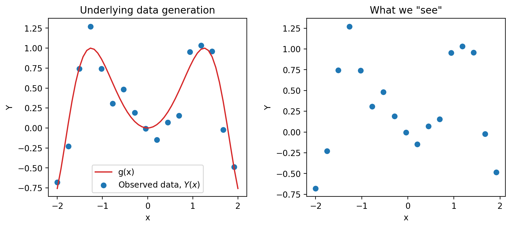
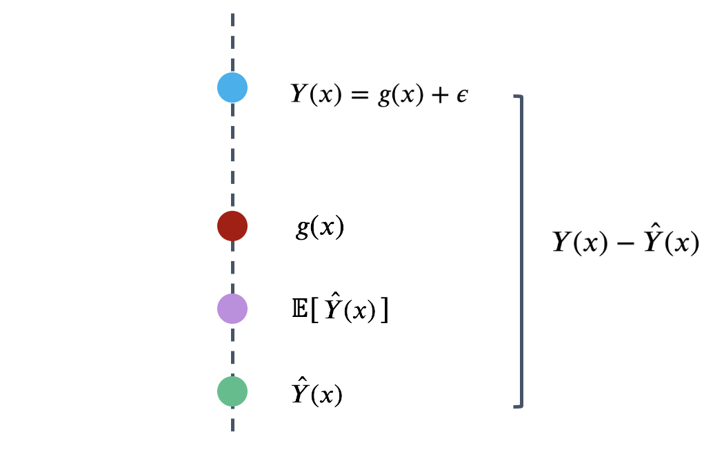
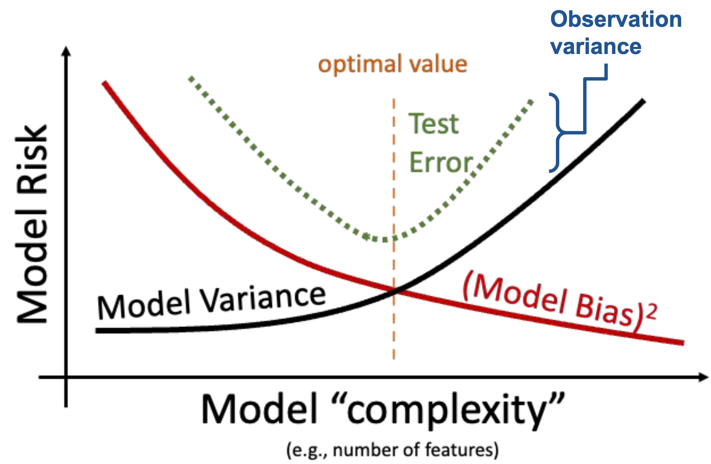
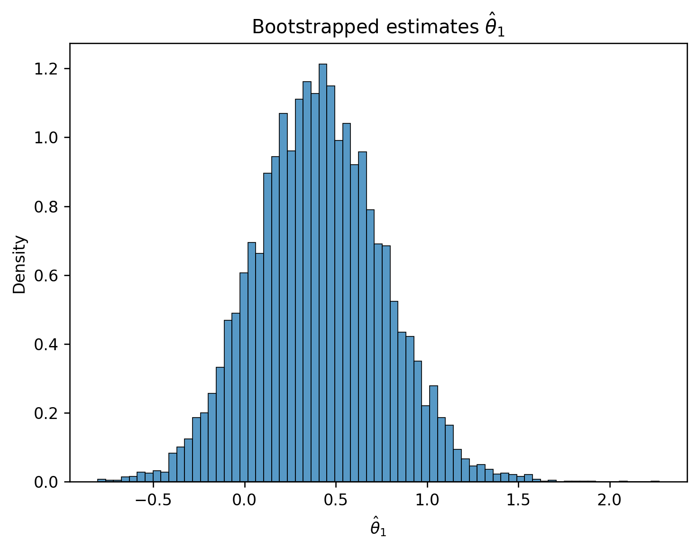
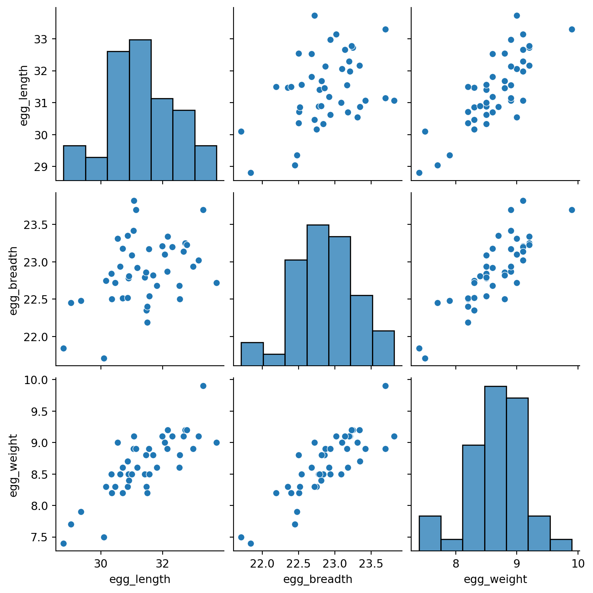
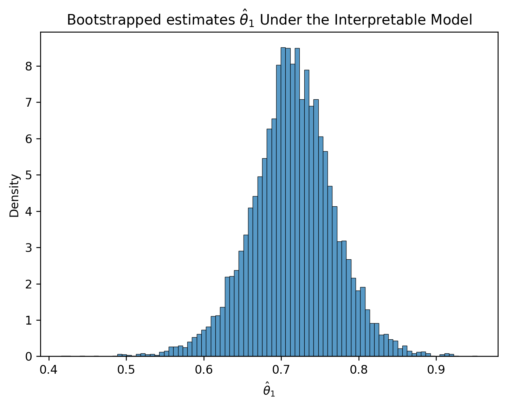

import pandas as pd
eggs = pd.read_csv("data/snowy_plover.csv")
eggs.head(5)| egg_weight | egg_length | egg_breadth | bird_weight | |
|---|---|---|---|---|
| 0 | 7.4 | 28.80 | 21.84 | 5.2 |
| 1 | 7.7 | 29.04 | 22.45 | 5.4 |
| 2 | 7.9 | 29.36 | 22.48 | 5.6 |
| 3 | 7.5 | 30.10 | 21.71 | 5.3 |
| 4 | 8.3 | 30.17 | 22.75 | 5.9 |
Last time, we introduced the idea of random variables: numerical functions of a sample. Most of our work in the last lecture was done to build a background in probability and statistics. Now that we’ve established some key ideas, we’re in a good place to apply what we’ve learned to our original goal – understanding how the randomness of a sample impacts the model design process.
In this lecture, we will delve more deeply into this idea of fitting a model to a sample. We’ll explore how to re-express our modeling process in terms of random variables and use this new understanding to steer model complexity.
As mentioned last time, a major goal of inference is to draw conclusions about the full population of data, given only a random sample. To do this, we aim to estimate the value of a parameter, which is a numerical function of the population (for example, the population mean \(\mu\)). We use a collected sample to construct a statistic, which is a numerical function on the random sample (for example, the sample mean \(\bar{X}_n\)). It’s helpful to think “p” for “parameter” and “population,” and “s” for “sample” and “statistic.”
Since the sample represents a random subset of the population, any sample statistic we generate will likely deviate from the true population parameter. We say that the sample statistic is an estimator of the true population parameter. Notationally, the population parameter is typically called \(\theta\), while its estimator is denoted by \(\hat{\theta}\).
Again, it is worth mentioning that population parameters are non-random, fixed values; and sample statistics are random variables. Since an estimator is a sample statistic, it is also a random variable.
To address our inference question, we aim to construct estimators that closely estimate the value of the population parameter. We evaluate how “good” an estimator is by answering three questions:
To answer the first question, we use a metric called bias. The bias of an estimator is how far off it is from the true parameter, on average:
\[\text{Bias}(\hat{\theta}) = E[\hat{\theta} - \theta] = E[\hat{\theta}] - \theta.\]
We can remove \(\theta\) from inside the expectation because, as a population parameter, \(\theta\) is fixed and not random. \(\text{Bias}(\hat{\theta})\) is also a fixed value.
As an example, the bias of the sample mean as an estimator of the population mean is:
\[\begin{align}E[\bar{X}_n - \mu] &= E\Big[\frac{1}{n}\sum_{i=1}^n (X_i)\Big] - \mu \\ &= \frac{1}{n}\sum_{i=1}^n E[X_i] - \mu \\ &= \frac{1}{n} (n\mu) - \mu \\ &= 0\end{align}\]
Because its bias is equal to 0, the sample mean is said to be an unbiased estimator of the population mean. Usually, we prefer an unbiased estimator because it means that our estimator will get the population parameter right, on average.
To answer the second question, we use variance. The variance of an estimator is a measure of how much the estimator tends to vary from its mean value:
\[\text{Var}(\hat{\theta}) = E\left[(\hat{\theta} - E[\hat{\theta}])^2 \right].\]
Like the variance we talked about last time, the variance of an estimator is a fixed value. Usually, we prefer an estimator with low variance, so we can get more consistent estimates across different samples.
To answer the last question, we use the mean squared error (MSE). MSE measures the “goodness” of an estimator by incorporating both the bias and variance. Formally, it is defined as:
\[\text{MSE}(\hat{\theta}) = E\left[(\hat{\theta} - \theta)^2\right].\]
MSE of an estimator is a fixed value. Using some clever algebra, we can decompose the MSE into squared bias and variance:
\[\begin{align} \text{MSE}(\hat{\theta}) &= E\left[(\hat{\theta} - E[\hat{\theta}] + \text{Bias}(\hat{\theta}))^2 \right] & \text{since Bias}(\hat{\theta}) = E[\hat{\theta}]-\theta \\ &= E\left[ (\hat{\theta} - E[\hat{\theta}])^2 + \left(\text{Bias}(\hat{\theta})\right)^2 + 2(\hat{\theta} - E[\hat{\theta}])\text{Bias}(\hat{\theta})\right]\\ &= E\left[(\hat{\theta} - E[\hat{\theta}])^2\right] + \left[\text{Bias}(\hat{\theta})\right]^2 + 2\text{Bias}(\hat{\theta})E\left[\hat{\theta} - E[\hat{\theta}]\right] & \text{linearity of expectation}\\ &= E\left[(\hat{\theta} - E[\hat{\theta}])^2\right] + \left[\text{Bias}(\hat{\theta})\right]^2 + 2\text{Bias}(\hat{\theta})E[\hat{\theta}] - 2\text{Bias}(\hat{\theta})E[\hat{\theta}] \\ &= \text{Var}(\hat{\theta}) + \left[\text{Bias}(\hat{\theta})\right]^2. \end{align}\]
You probably remember MSE as our risk function in the modeling process, and we will make the connection between the MSE of an estimator and the MSE of a model in a later section.
Now that we’ve established the idea of an estimator, let’s see how we can apply this learning to the modeling process. To do so, we’ll reformulate the modeling process in the language of random variables.
Let’s first revisit the modeling process we introduced in Lecture 9. We assumed that we have a sample of pairs of observations \((x_i, y_i)\): \(\mathcal{D} = \{(x_1, y_1), (x_2, y_2), \dots, (x_n, y_n)\}\), drawn from a population of \((x_i, y_i)\) pairs. \(x_i\) can be a scalar value (in the case of Simple Linear Regression), or a vector (in the case of Multiple Linear Regression).
We then tried to build a model to use the \(x_i\)’s to predict the \(y_i\)’s. For example, given a dataset with one feature below, we can fit a model on the right.

What we did not say in the modeling lectures is that every time we create models we are making assumptions. In particular, we are making assumptions about how our each pair of data \((x_i, y_i)\) is generated.
Again, we are working with an input variable, \(x\), and a response variable, \(Y\)—we will see why we capitalize \(Y\) here very soon. The main assumption we make is that \(Y\) and \(x\) are linked by some true underlying relationship function \(g\) —in other words, the true underlying model is \(g(x)\). \(g\) represents some “universal truth” or “law of nature” that defines the underlying relationship between \(x\) and \(Y\).
However, this underlying relationship \(g\) is almost always unknown to us. The best we can do is to collect some sample data in the real world to try to understand it. Unfortunately, the data collection process will always have some inherent error (think of the randomness you might encounter when taking measurements in a scientific experiment). We denote this by introducing a random noise term \(\epsilon\):
\[\text{Observed relationship: }Y = g(x) + \epsilon,\]
where we assume that \(\epsilon\) is a random variable with \(E[\epsilon] = 0\) and \(\text{Var}(\epsilon) = \sigma^2\). Crucially, we also assume that the errors \(\epsilon\) are i.i.d. across each individual observation. The existence of this random noise means that our observations, \(Y(x)\), are random variables. Since we usually denote random variables using capitalized letters, we use the capitalized \(Y\) to denote the true response variable.

Another assumption that we make is that the input variables \(x\) are fixed and not random. Therefore, \(g(x)\) is a fixed value. As a result, the randomness in \(Y\) comes solely from the random noise \(\epsilon\). We can calculate the expectation and variance of the random variable \(Y\):
\[ \begin{align*} E[Y] &= E[g(x) + \epsilon] = g(x) + E[\epsilon] = g(x)\\ \text{Var}(Y) &= \text{Var}(g(x) + \epsilon) = \text{Var}(\epsilon) = \sigma^2. \end{align*} \]
If we assume the true relationship \(g\) is linear, we can re-express this goal in a slightly different way. The observed data is thus generated by the relationship:
\[Y(x) = g(x) + \epsilon = \theta_0 + \theta_1 x_1 + \ldots + \theta_p x_p + \epsilon.\]
Please note we are using the \(\theta_i\)’s to mean different things as before. In previous modeling lectures, we assumed that \(\theta_0, \theta_1, \dots, \theta_p\) are any model coefficients: they can be arbitrary values. Here, we assume that \(\theta_0, \theta_1, \dots, \theta_p\) are the underlying true model parameters. In other words, they are population parameters that are fixed, but unknown to us.
Therefore, we can rephrase the modeling process as a task of parameter estimation. We aim to fit a model to obtain estimates for each \(\theta_i\), which we refer to as \(\hat{\theta}_i\):
\[\hat{Y}(x) = \hat{\theta}_0 + \hat{\theta}_1 x_1 + \ldots + \hat{\theta}_p x_p\]
Because the dataset we have at hand is a random sample drawn from the population, the estimated \(\hat{\theta}_i\)’s are sample statistics. Moreover, we use them as estimators for the true population parameters \(\theta_i\)’s.
Since \(\hat{\theta}_i\)’s are sample statistics and therefore random variables, \(\hat{Y}\) is also a random variable. It is important to note that the sources of randomness in \(Y\) and \(\hat{Y}\) are different:
To evaluate our model’s performance, we’ve previously considered the MSE of our model across a single sample of observed data. Now that we’ve reframed our model \(\hat{Y}\) and observations \(Y\) as random variables, we’ll use a theoretical approach to better understand the model’s prediction error.
Model risk is defined as the mean square prediction error of the random variable \(\hat{Y}\). It is an expectation across all samples we could have possibly gotten when fitting the model. Model risk considers the model’s performance on any sample that is theoretically possible, rather than the specific data that we have collected.
\[\text{model risk }=E\left[(Y-\hat{Y})^2\right]\]
What is the origin of the error encoded by model risk? Recall the data generating process we established earlier. There is a true underlying relationship \(g\), observed data (with random noise) \(Y\), and model \(\hat{Y}\).

To better understand model risk, we’ll zoom in on a single data point in the plot above.

Remember that \(\hat{Y}(x)\) is a random variable – it is the prediction made for \(x\) after being fit on the specific sample used for training. If we had used a different sample for training, a different prediction might have been made for this value of \(x\). To capture this, the diagram above considers both the prediction \(\hat{Y}(x)\) made for a particular random training sample, and the expected prediction across all possible training samples, \(E[\hat{Y}(x)]\).
We can use this simplified diagram to break down the prediction error into smaller components. First, start by considering the error on a single prediction, \(Y(x)-\hat{Y}(x)\).

We can identify three components to this error.

That is, the error can be written as:
\[Y(x)-\hat{Y}(x) = \epsilon + \left(g(x)-E\left[\hat{Y}(x)\right]\right) + \left(E\left[\hat{Y}(x)\right] - \hat{Y}(x)\right)\] \[\newline \] The model risk is the expected square of the expression above, \(E\left[(Y(x)-\hat{Y}(x))^2\right]\). If we square both sides and then take the expectation, we will get the following decomposition of model risk:
\[E\left[(Y(x)-\hat{Y}(x))^2\right] = E[\epsilon^2] + \left(g(x)-E\left[\hat{Y}(x)\right]\right)^2 + E\left[\left(E\left[\hat{Y}(x)\right] - \hat{Y}(x)\right)^2\right]\]
It looks like we are missing some cross-product terms when squaring the right-hand side, but it turns out that all of those cross-product terms are zero. The detailed derivation is out of scope for this class, but a proof is attached at the end of this note for your reference.
This expression may look complicated at first blush, but we’ve actually already defined each term earlier this lecture! Let’s look at them term by term.
The first term in the above decomposition is \(E[\epsilon^2]\). Remember \(\epsilon\) is the random noise when observing \(Y\), with expectation \(0\) and variance \(\sigma^2\). We can show that \(E[\epsilon^2]\) is the variance of \(\epsilon\): \[ \begin{align*} \text{Var}(\epsilon) &= E[\epsilon^2] + \left(E[\epsilon]\right)^2\\ &= E[\epsilon^2] + 0^2\\ &= \sigma^2. \end{align*} \]
This term describes how variable the random error \(\epsilon\) (and \(Y\)) is for each observation. This is called the observation variance. It exists due to the randomness in our observations \(Y\). It is a form of chance error we talked about in the Sampling lecture.
\[\text{observation variance} = \text{Var}(\epsilon) = \sigma^2.\]
The observation variance results from measurement errors when observing data. To reduce this observation variance, we could try to get more precise measurements, but it is often beyond the control of us data scientists. Because of this, the observation variance \(\sigma^2\) is sometimes called “irreducible error.”
We will then look at the last term: \(E\left[\left(E\left[\hat{Y}(x)\right] - \hat{Y}(x)\right)^2\right]\). If you recall the definition of variance from last lecture, this is precisely \(\text{Var}(\hat{Y}(x))\). We call this the model variance.
It describes how much the prediction \(\hat{Y}(x)\) tends to vary when we fit the model on different samples. Remember the sample we collect can come out very differently, thus the prediction \(\hat{Y}(x)\) will also be different. The model variance describes this variability due to the randomness in our sampling process. Like observation variance, it is also a form of chance error—even though the sources of randomness are different.
\[\text{model variance} = \text{Var}(\hat{Y}(x)) = E\left[\left(\hat{Y}(x) - E\left[\hat{Y}(x)\right]\right)^2\right]\]
The main reason for large model variance is because of overfitting: we paid too much attention to the details in our sample that small differences in our random sample lead to large differences in the fitted model. To remediate this, we try to reduce model complexity (e.g. take out some features and limit the magnitude of estimated model coefficients) and not fit our model on the noises.
Finally, the second term is \(\left(g(x)-E\left[\hat{Y}(x)\right]\right)^2\). What is this? The term \(E\left[\hat{Y}(x)\right] - g(x)\) is called the model bias, thus this term is the squared model bias.
Remember that \(g(x)\) is the fixed underlying truth and \(\hat{Y}(x)\) is our fitted model, which is random. Model bias therefore measures how far off \(g(x)\) and \(\hat{Y}(x)\) are, on average over all possible samples.
\[\text{model bias} = E\left[\hat{Y}(x) - g(x)\right] = E\left[\hat{Y}(x)\right] - g(x)\]
The model bias is not random. If it’s positive, our model tends to overestimate \(g(x)\); if it’s negative, our model tends to underestimate \(g(x)\).
There are two main reasons for large model bias:
To fix this, we increase model complexity or incorporate more useful features, but we don’t want to overfit. You can start to see a tradeoff here: if we increase model complexity, we decrease the model bias, but we also risk increasing the model variance.
The above definitions enable us to simplify the decomposition of model risk before as:
\[ \Large \text{model risk = observation variance + (model bias)}^2 \text{+ model variance}. \]
This is known as the bias-variance tradeoff. What does it mean? Remember that the model risk is a measure of the model’s performance. Our goal in building models is to keep model risk low; this means that we will want to ensure that each component of model risk is kept at a low value.
Observation variance is an inherent, random part of the data collection process. We aren’t able to reduce the observation variance, so we’ll focus our attention to the model bias and model variance.
In the Feature Engineering lecture, we considered the issue of overfitting. We saw that the model’s error or bias tends to decrease as model complexity increases—if we design a highly complex model, it will tend to make predictions that are closer to the true relationship \(g\). At the same time, model variance tends to increase as model complexity increases: a complex model may overfit to the training data, meaning that small differences in the random samples used for training lead to large differences in the fitted model. We have a problem. To reduce model risk, we could decrease model bias by increasing the model’s complexity, which would lead to an increase in model variance. Alternatively, we could decrease model variance by decreasing the model’s complexity—at the cost of increased bias.

We need to strike a balance. Our goal in model creation is to use a complexity level that is high enough to keep bias low, but not so high that model variance is large.
So far, we’ve spent a great deal of time working with models—the Simple Linear Regression model, the Multiple Linear Regression model, and regularized linear models, etc.. When we first introduced the idea of modeling a few weeks ago, we did so in the context of prediction: using models to make predictions about unseen data.
Another reason we might build models is to better understand complex phenomena in the world around us. Inference is the task of using a model to infer the true underlying relationships between the features and response variables. If we are working with a set of housing data, prediction might ask: given the attributes of a house, how much is it worth? Inference might ask: how much does having a local park impact the value of a house?
Recall the framework we established earlier this lecture. If we assume that the underlying relationship between our observations and input features is linear, we can express this relationship in terms of the unknown, true model parameters \(\theta\).
\[Y(x) = g(x) + \epsilon = \theta_0 + \theta_1 x_1 + \ldots + \theta_p x_p + \epsilon\]
Our model attempts to estimate each true parameter \(\theta_i\) using the estimates \(\hat{\theta}_i\).
\[\hat{Y}(x) = \hat{\theta}_0 + \hat{\theta}_1 x_1 + \ldots + \hat{\theta}_p x_p\]
Let’s pause for a moment. At this point, we’re very used to working with the idea of a model parameter. But what exactly does each coefficient \(\theta_i\) actually mean? We can think of each \(\theta_i\) as a slope of the linear model – if all other variables are held constant, a unit change in \(x_i\) will result in a \(\theta_i\) change in \(Y(x)\). Broadly speaking, a large value of \(\theta_i\) means that the feature \(x_i\) has a large effect on the response; conversely, a small value of \(\theta_i\) means that \(x_i\) has little effect on the response. In the extreme case, if the true parameter \(\theta_i\) is 0, then the feature \(x_i\) has no effect on \(Y(x)\).
If the true parameter \(\theta_i\) for a particular feature is 0, this tells us something pretty significant about the world – there is no underlying relationship between \(x_i\) and \(Y(x)\)! How then, can we test if a parameter is 0? As a baseline, we go through our usual process of drawing a sample, using this data to fit a model, and computing an estimate \(\hat{\theta}_i\). However, we need to also consider the fact that if our random sample had come out differently, we may have found a different result for \(\hat{\theta}_i\). To infer if the true parameter \(\theta_i\) is 0, we want to draw our conclusion from the distribution of \(\hat{\theta}_i\) estimates we could have drawn across all other random samples.
To do this, we’ll use an inference technique called hypothesis testing. This concept was introduced back in Data 8. You may find it helpful to review the hypothesis testing method to refresh your memory.
We’ll work with the snowy plover dataset throughout this section.
import pandas as pd
eggs = pd.read_csv("data/snowy_plover.csv")
eggs.head(5)| egg_weight | egg_length | egg_breadth | bird_weight | |
|---|---|---|---|---|
| 0 | 7.4 | 28.80 | 21.84 | 5.2 |
| 1 | 7.7 | 29.04 | 22.45 | 5.4 |
| 2 | 7.9 | 29.36 | 22.48 | 5.6 |
| 3 | 7.5 | 30.10 | 21.71 | 5.3 |
| 4 | 8.3 | 30.17 | 22.75 | 5.9 |
Our goal will be to predict the weight of a newborn plover chick, which we assume follows the true relationship below.
\[\text{bird\_weight} = \theta_0 + \theta_1 \text{egg\_weight} + \theta_2 \text{egg\_length} + \theta_3 \text{egg\_breadth} + \epsilon\]
Say we wish to determine if the egg_weight impacts the bird_weight of a chick – we want to infer if \(\theta_1\) is equal to 0.
First, we define our hypotheses:
Next, we use our data to fit a model that approximates the relationship above. This gives us the observed value of \(\hat{\theta}_1\) found from our data.
from sklearn.linear_model import LinearRegression
X = eggs[["egg_weight", "egg_length", "egg_breadth"]]
Y = eggs["bird_weight"]
model = LinearRegression()
model.fit(X, Y)
# This gives an array containing the fitted model parameter estimates
thetas = model.coef_
# Put the parameter estimates in a nice table for viewing
pd.DataFrame({"theta_hat":[model.intercept_, thetas[0], thetas[1], thetas[2]]}, index=["theta_0", "theta_1", "theta_2", "theta_3"])| theta_hat | |
|---|---|
| theta_0 | -4.605670 |
| theta_1 | 0.431229 |
| theta_2 | 0.066570 |
| theta_3 | 0.215914 |
We now have the value of \(\hat{\theta}_1\) when considering the single sample of data that we have. To get a sense of how this estimate might vary if we were to draw different random samples, we will use the bootstrap. To construct a bootstrap sample, we will draw a resample from the collected data that:
We draw a bootstrap sample, use this sample to fit a model, and record the result for \(\hat{\theta}_1\) on this bootstrapped sample. We then repeat this process many times to generate a bootstrapped empirical distribution of \(\hat{\theta}_1\). This gives us an estimate of what the true distribution of \(\hat{\theta}_1\) across all possible samples might look like.
# Set a random seed so you generate the same random sample as staff
# In the "real world", we wouldn't do this
import numpy as np
np.random.seed(1337)
# Set the sample size of each bootstrap sample
n = len(eggs)
# Create a list to store all the bootstrapped estimates
estimates = []
# Generate a bootstrap resample from `eggs` and find an estimate for theta_1 using this sample.
# Repeat 10000 times.
for i in range(10000):
bootstrap_resample = eggs.sample(n, replace=True)
X_bootstrap = bootstrap_resample[["egg_weight", "egg_length", "egg_breadth"]]
Y_bootstrap = bootstrap_resample["bird_weight"]
bootstrap_model = LinearRegression()
bootstrap_model.fit(X_bootstrap, Y_bootstrap)
bootstrap_thetas = bootstrap_model.coef_
estimates.append(bootstrap_thetas[0])import matplotlib.pyplot as plt
import seaborn as sns
plt.figure(dpi=120)
sns.histplot(estimates, stat="density")
plt.xlabel(r"$\hat{\theta}_1$")
plt.title(r"Bootstrapped estimates $\hat{\theta}_1$");
Now, we have a sense of how \(\hat{\theta}_1\) might vary across different random samples. How does this help us understand if the true parameter \(\theta_1\) is 0 or not?
To do this, we’ll use an approximate confidence interval. Recall from Data 8 that an \(x\%\) confidence interval is a range of values where we are \(x\%\) confident that the interval contains the true parameter. In other words, if we repeated the bootstrapping process above many times, we’d expect the \(x\%\) confidence interval to contain the true value of \(\theta_1\) about \(x\%\) of the time.
For our purposes, we’ll consider the approximate 95% confidence interval. Because of the duality of confidence intervals and hypothesis tests, we reject the null hypothesis at a cutoff level of 5% if 0 is not contained in the 95% confidence interval for \(\hat{\theta}_1\).
To create a 95% confidence interval, we compute the 2.5th and 97.5th percentiles of our bootstrapped estimates of \(\theta_1\).
lower = np.percentile(estimates, 2.5)
upper = np.percentile(estimates, 97.5)
conf_interval = (lower, upper)
conf_interval(-0.2586481195684874, 1.103424385420405)We find that our bootstrapped approximate 95% confidence interval for \(\theta_1\) is \([-0.259, 1.103]\). Immediately, we can see that 0 is indeed contained in this interval – this means that we cannot conclude that \(\theta_1\) is non-zero! More formally, we fail to reject the null hypothesis (that \(\theta_1\) is 0) under a 5% cutoff.
We can repeat this process to construct 95% confidence intervals for the other parameters of the model.
np.random.seed(1337)
theta_0_estimates = []
theta_1_estimates = []
theta_2_estimates = []
theta_3_estimates = []
for i in range(10000):
bootstrap_resample = eggs.sample(n, replace=True)
X_bootstrap = bootstrap_resample[["egg_weight", "egg_length", "egg_breadth"]]
Y_bootstrap = bootstrap_resample["bird_weight"]
bootstrap_model = LinearRegression()
bootstrap_model.fit(X_bootstrap, Y_bootstrap)
bootstrap_theta_0 = bootstrap_model.intercept_
bootstrap_theta_1, bootstrap_theta_2, bootstrap_theta_3 = bootstrap_model.coef_
theta_0_estimates.append(bootstrap_theta_0)
theta_1_estimates.append(bootstrap_theta_1)
theta_2_estimates.append(bootstrap_theta_2)
theta_3_estimates.append(bootstrap_theta_3)
theta_0_lower, theta_0_upper = np.percentile(theta_0_estimates, 2.5), np.percentile(theta_0_estimates, 97.5)
theta_1_lower, theta_1_upper = np.percentile(theta_1_estimates, 2.5), np.percentile(theta_1_estimates, 97.5)
theta_2_lower, theta_2_upper = np.percentile(theta_2_estimates, 2.5), np.percentile(theta_2_estimates, 97.5)
theta_3_lower, theta_3_upper = np.percentile(theta_3_estimates, 2.5), np.percentile(theta_3_estimates, 97.5)
# Make a nice table to view results
pd.DataFrame({"lower":[theta_0_lower, theta_1_lower, theta_2_lower, theta_3_lower], "upper":[theta_0_upper, \
theta_1_upper, theta_2_upper, theta_3_upper]}, index=["theta_0", "theta_1", "theta_2", "theta_3"])| lower | upper | |
|---|---|---|
| theta_0 | -15.278542 | 5.161473 |
| theta_1 | -0.258648 | 1.103424 |
| theta_2 | -0.099138 | 0.208557 |
| theta_3 | -0.257141 | 0.758155 |
Something’s off here. Notice that 0 is included in the 95% confidence interval for every parameter of the model. Using the interpretation we outlined above, this would suggest that we can’t say for certain that any of the input variables impact the response variable! This makes it seem like our model can’t make any predictions – and yet, each model we fit in our bootstrap experiment above could very much make predictions of \(Y\).
How can we explain this result? Think back to how we first interpreted the parameters of a linear model. We treated each \(\theta_i\) as a slope, where a unit increase in \(x_i\) leads to a \(\theta_i\) increase in \(Y\), if all other variables are held constant. It turns out that this last assumption is very important. If variables in our model are somehow related to one another, then it might not be possible to have a change in one of them while holding the others constant. This means that our interpretation framework is no longer valid! In the models we fit above, we incorporated egg_length, egg_breadth, and egg_weight as input variables. These variables are very likely related to one another – an egg with large egg_length and egg_breadth will likely be heavy in egg_weight. This means that the model parameters cannot be meaningfully interpreted as slopes.
To support this conclusion, we can visualize the relationships between our feature variables. Notice the strong positive association between the features.
sns.pairplot(eggs[["egg_length", "egg_breadth", "egg_weight"]]);/Users/dominicliu/.pyenv/versions/3.11.4/lib/python3.11/site-packages/seaborn/axisgrid.py:118: UserWarning:
The figure layout has changed to tight

This issue is known as colinearity, sometimes also called multicolinearity. Colinearity occurs when one feature can be predicted fairly accurately by a linear combination of the other features, which happens when one feature is highly correlated with the others.
Why is colinearity a problem? Its consequences span several aspects of the modeling process:
The take-home point is that we need to be careful with what features we select for modeling. If two features likely encode similar information, it is often a good idea to choose only one of them as an input variable.
Let us now consider a more interpretable model: we instead assume a true relationship using only egg weight:
\[f_\theta(x) = \theta_0 + \theta_1 \text{egg\_weight} + \epsilon\]
X_int = eggs[["egg_weight"]]
Y_int = eggs["bird_weight"]
model_int = LinearRegression()
model_int.fit(X_int, Y_int)
# This gives an array containing the fitted model parameter estimates
thetas_int = model_int.coef_
# Put the parameter estimates in a nice table for viewing
pd.DataFrame({"theta_hat":[model_int.intercept_, thetas_int[0]]}, index=["theta_0", "theta_1"])| theta_hat | |
|---|---|
| theta_0 | -0.058272 |
| theta_1 | 0.718515 |
# Set a random seed so you generate the same random sample as staff
# In the "real world", we wouldn't do this
np.random.seed(1337)
# Set the sample size of each bootstrap sample
n = len(eggs)
# Create a list to store all the bootstrapped estimates
estimates_int = []
# Generate a bootstrap resample from `eggs` and find an estimate for theta_1 using this sample.
# Repeat 10000 times.
for i in range(10000):
bootstrap_resample_int = eggs.sample(n, replace=True)
X_bootstrap_int = bootstrap_resample_int[["egg_weight"]]
Y_bootstrap_int = bootstrap_resample_int["bird_weight"]
bootstrap_model_int = LinearRegression()
bootstrap_model_int.fit(X_bootstrap_int, Y_bootstrap_int)
bootstrap_thetas_int = bootstrap_model_int.coef_
estimates_int.append(bootstrap_thetas_int[0])
plt.figure(dpi=120)
sns.histplot(estimates_int, stat="density")
plt.xlabel(r"$\hat{\theta}_1$")
plt.title(r"Bootstrapped estimates $\hat{\theta}_1$ Under the Interpretable Model");
Notice how the interpretable model performs almost as well as our other model:
from sklearn.metrics import mean_squared_error
rmse = mean_squared_error(Y, model.predict(X))
rmse_int = mean_squared_error(Y_int, model_int.predict(X_int))
print(f'RMSE of Original Model: {rmse}')
print(f'RMSE of Interpretable Model: {rmse_int}')RMSE of Original Model: 0.045470853802757734
RMSE of Interpretable Model: 0.046493941375556846Yet, the confidence interval for the true parameter \(\theta_{1}\) does not contain zero.
lower_int = np.percentile(estimates_int, 2.5)
upper_int = np.percentile(estimates_int, 97.5)
conf_interval_int = (lower_int, upper_int)
conf_interval_int(0.6029335250209632, 0.8208401738546206)In retrospect, it’s no surprise that the weight of an egg best predicts the weight of a newly-hatched chick.
A model with highly correlated variables prevents us from interpreting how the variables are related to the prediction.
It is important to keep in mind that all we did in this section also depend on some assumptions. In particular, we made two big assumptions:
This section walks through the detailed derivation of the Bias-Variance Decomposition in the Bias-Variance Tradeoff section earlier in this note.